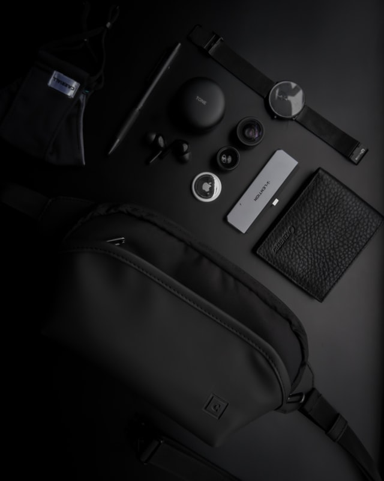
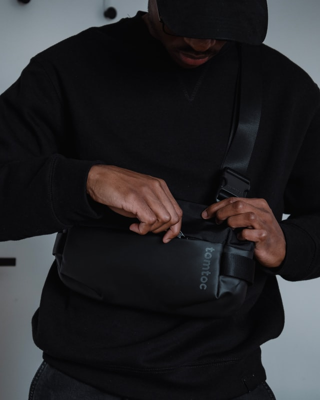
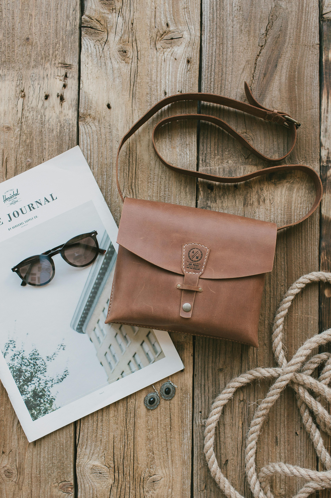
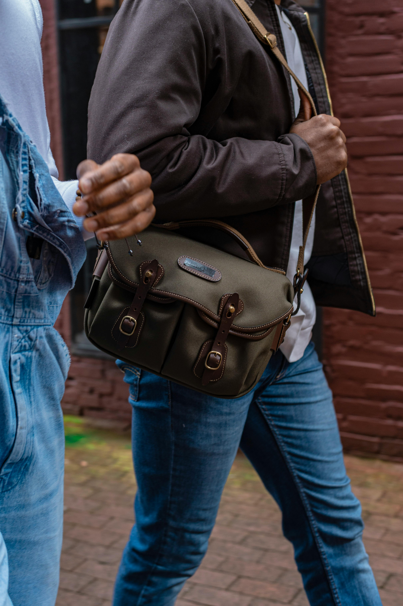
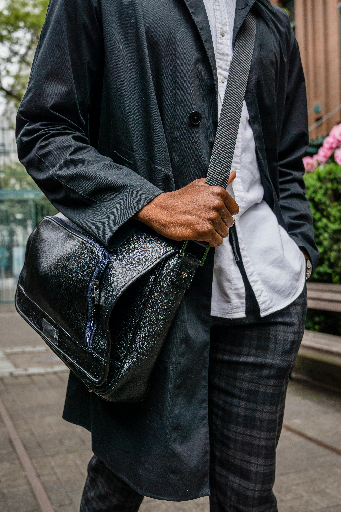
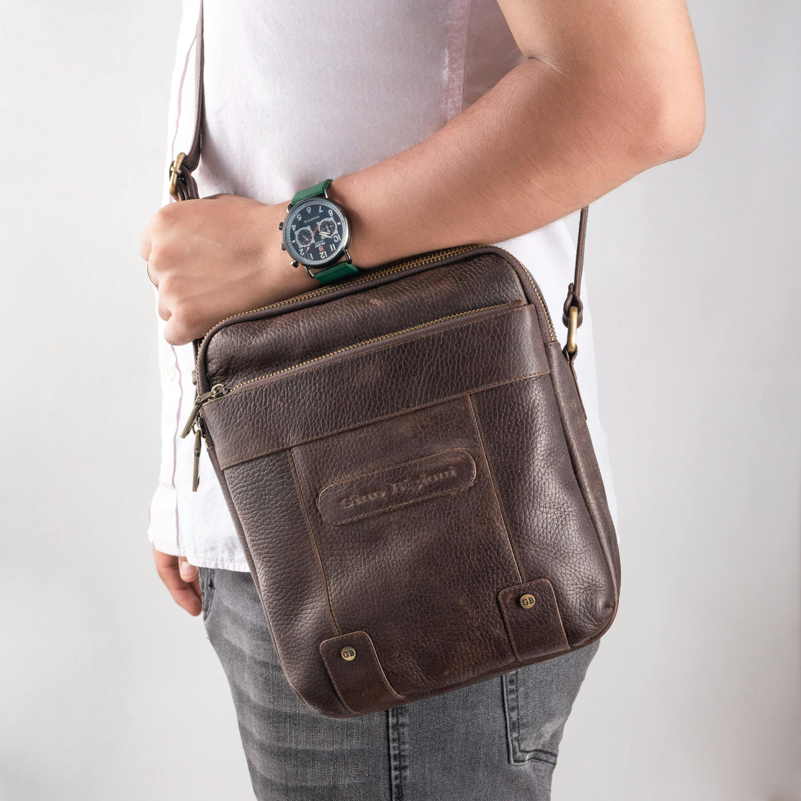
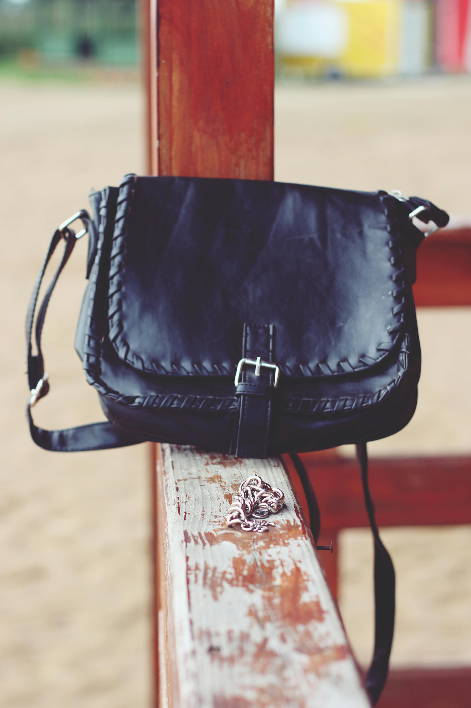
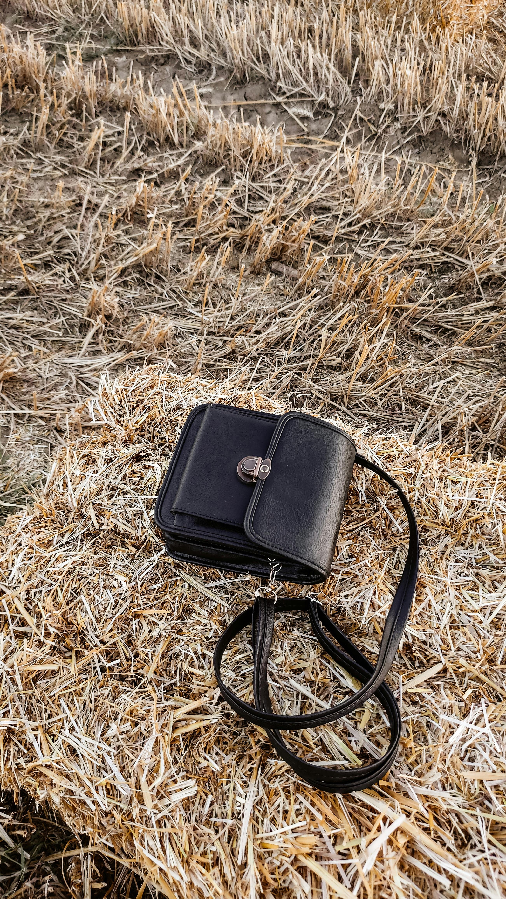

Version 1
Designed for light daily carry. This option prioritizes a slim profile and fast access to essentials such as a phone, wallet, keys, and small accessories. Best suited for short outings where minimal storage is preferred.
We evaluated popular sling bag styles to understand comfort, organization, and real-world usability.

We gathered feedback from everyday commuters, travelers, and outdoor enthusiasts to understand how sling bags perform across different routines. Responses highlighted several consistent themes: convenience compared to traditional backpacks, quick access to essentials, and the importance of strap comfort and fit. The findings also reinforced that style and function vary widely by design, materials, and intended use.
Participants tested sling bags they already owned across common scenarios—commuting, walking in busy areas, short hikes, and errands—to assess stability, accessibility, and day-to-day comfort. Notes were collected on capacity, pocket layout, zippers, and how well each bag handled frequent use.

Designed for light daily carry. This option prioritizes a slim profile and fast access to essentials such as a phone, wallet, keys, and small accessories. Best suited for short outings where minimal storage is preferred.
Balanced capacity and organization. This option adds dedicated compartments for improved sorting, making it a solid fit for commuting and travel. Ideal for users who want structure without moving up to a full backpack.
Built for versatility and longer days. This option focuses on comfort under load and durable materials, with additional space for items like a compact water bottle, charger, or small camera. Recommended for travel days and extended time on the go.
Featured Products

Compact daily carry with quick-access pockets and a streamlined profile.
$39.99

More organization for chargers, small notebooks, and daily essentials.
$54.99

Durable materials and stable fit for walks, errands, and light outdoor use.
$59.99

Structured compartments for gadgets, cables, and small accessories.
$64.99

Designed for passports, tickets, and easy access while on the move.
$69.99

Extra capacity and comfort for longer days and more gear.
$74.99